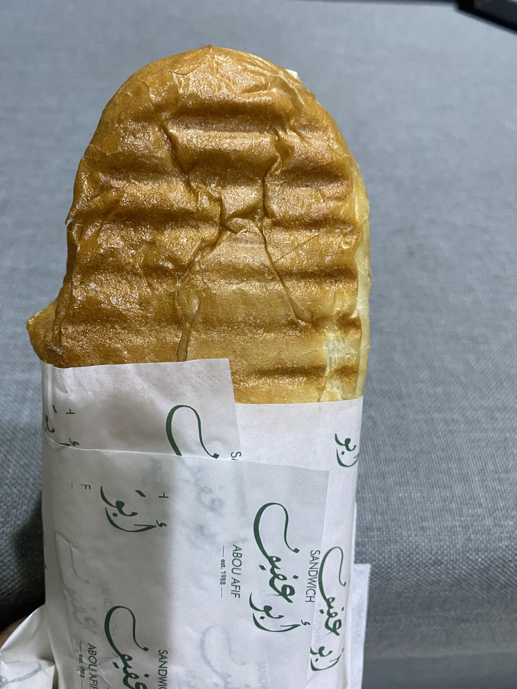
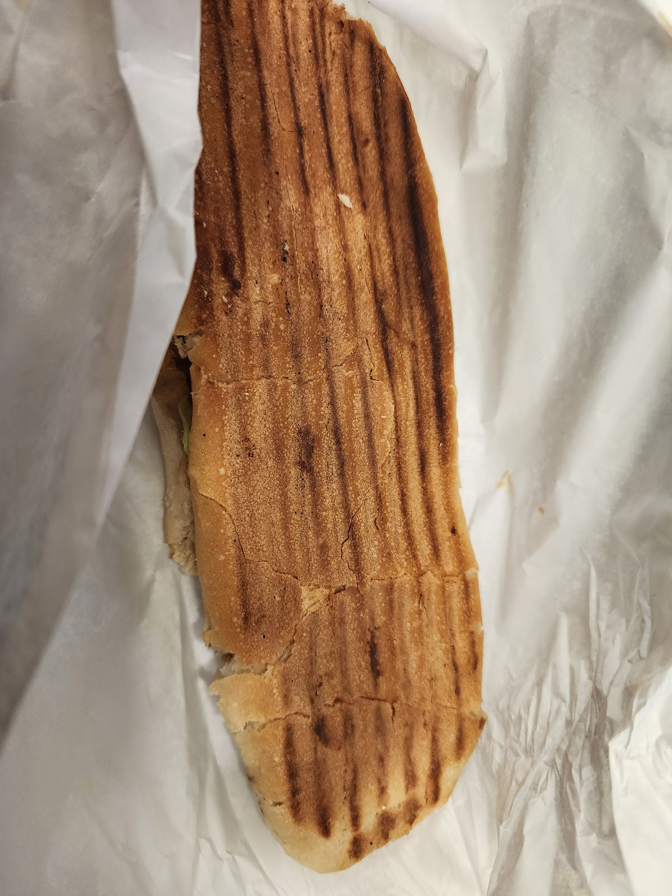
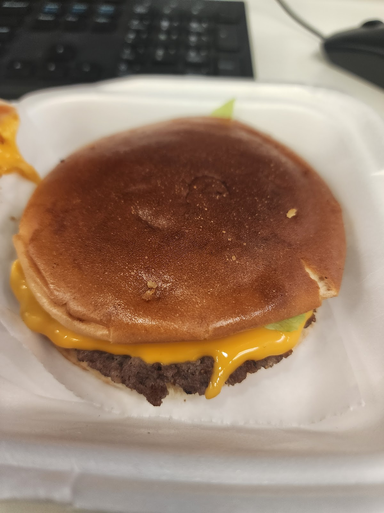
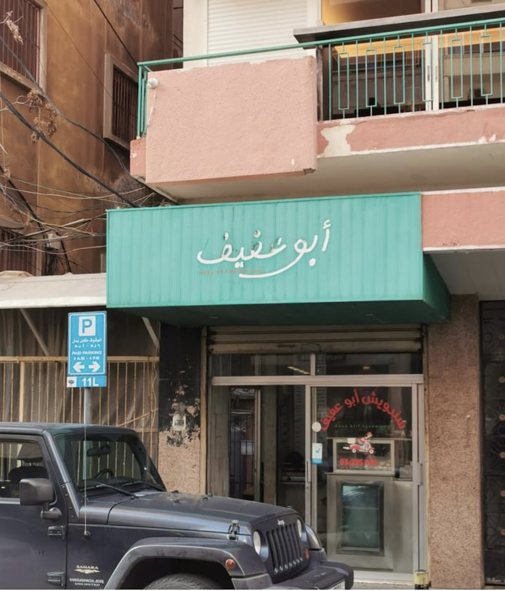

One of the best sandwich spots in Beirut. Everything is great from their Francisco to their signature Cheeseburger. Highly recommended ⭐️⭐️⭐️Reza Mak
Iconic and old place in Hamra! Must try sandwiches are Fransisco, abou afif chicken, spicy chicken and abou afif lahme. Cheese burger is a must order as well!Zeina El Zein
Facing medco station, Beirut, Lebanon
+961 3 235 444